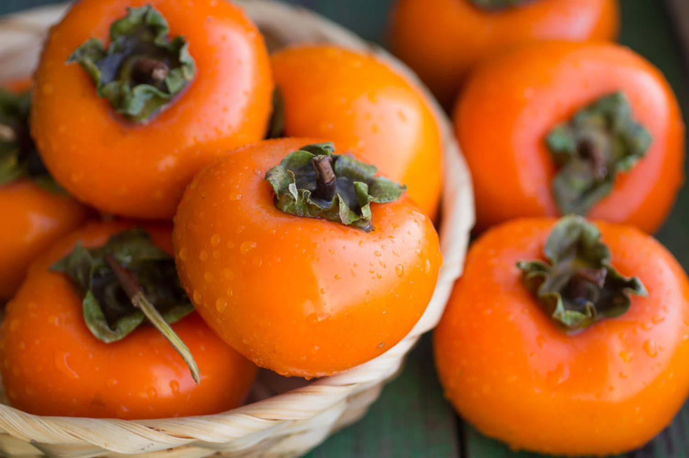

柿子应该这样吃:
1. 不要空腹吃柿子，尽量餐后食用。
2. 吃柿子前后不要喝醋，避免与酸性水果，如橘子、猕猴桃等同食。
3. 吃柿子后一小时内不宜喝牛奶。
4. 不宜一次食用过多，年龄偏大的人，消化功能减退，多食易得柿石病。

有的人觉得吃柿子的时候带柿子皮吃更有味道，其实这种吃法不科学。因为柿子中的鞣酸绝大多数集中在皮上，在柿子脱涩时，不可能将其中的鞣酸全部脱尽，所以连皮一起吃更容易形成胃结石，尤其是未成熟的柿子，其皮中含的鞣酸更多。
此外，柿子不要与含高蛋白的蟹、鱼、虾等食品一起吃。这些含高蛋白的蟹、鱼、虾在鞣酸的作用下，很容易凝固成块，形成胃结石。
值得注意的是：除了柿子，很多人爱吃的山楂、黑枣也都富含鞣酸，大量或不正确地进食同样会导致肠梗阻的发生。